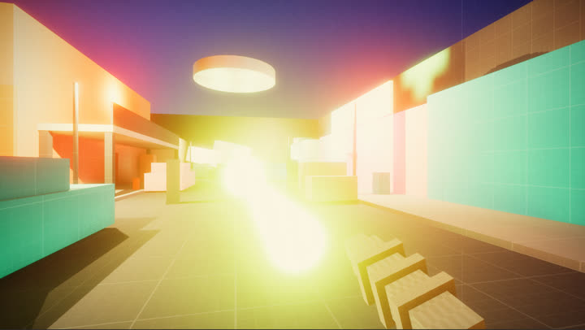
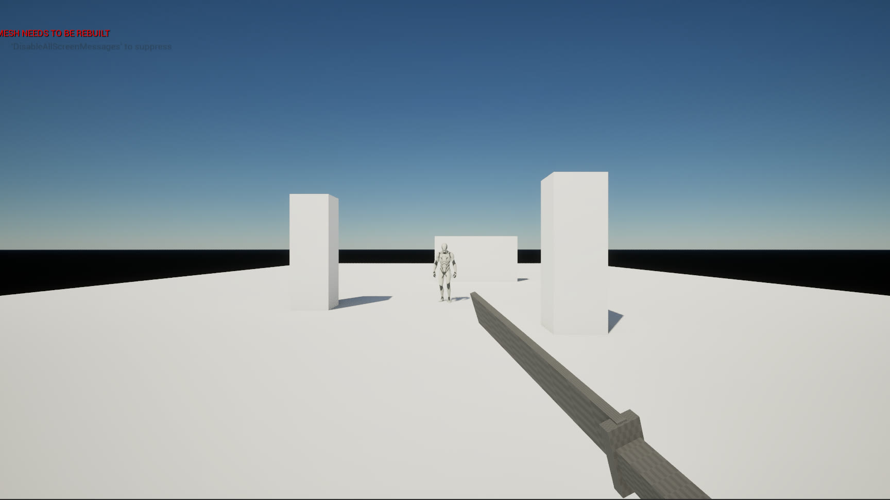

Thirteen stills of the game so far: five usable, eight broken
I asked for screenshots of whatever exists. The UFO and noir sets have their film looks and the ray gun fires, but no level has a HUD, and the stills showed why.
Day 1, Thu 12 NovHour 7
After the two-hour stall I wanted to see the game, not read about it. So at 11:02 I asked the Director for screenshots of whatever's available, even if it disrupted the queue. The Engine played each level and took thirteen stills.
Its verdict: five usable, eight broken.
The five
The sets are still grey boxes. What's new is that each film has its own look on top: the World session's kit adds one per era.
 The noir set, a jazz club, in black and white with film grain. The exposure is blown out at the edges; that's on the fix list.
The noir set, a jazz club, in black and white with film grain. The exposure is blown out at the edges; that's on the fix list.
The ray gun firing. The bolt is a real object that crawls when time is slow. Two bolts in the air. The glow washes out half the screen, which is also on the list.
Two bolts in the air. The glow washes out half the screen, which is also on the list. The zombie set with the machete and two shamblers. No grindhouse look in play yet; that is on the list too.
The zombie set with the machete and two shamblers. No grindhouse look in play yet; that is on the list too.


The eight
The Engine named the broken ones _broken and wrote down why. Some of its notes:
"No HUD in any frame: WBP_HUD isn't added to the viewport yet"
"05c/05d revolver: no visible projectile; gun reads as a bar."
"Menus/splash: not reachable in PIE (no widget is opened by the game yet…)"

The HUD one is the interesting one. The UI session built a HUD. The Gameplay session built the data it shows. Both tasks passed their own checks. I wondered if the screenshot tool was just leaving the UI out. The Engine checked: it wasn't. Nothing in the game ever puts the HUD on screen. Each session had done its half, and nobody owned the join.
The replay still had a similar cause. It showed a first-person frame, not a replay camera, because take one was never recorded: the recorder started listening just after the first "take started" call.
What happened next
Within twenty minutes of the stills, the Director had:
- made a new top-priority task for Gameplay to put the HUD and menus on screen,
- sent the revolver, nav mesh, exposure and bloom problems to their owners,
- had the replay fix found, built and handed to the Engine by 11:36.
Thirteen screenshots found more than the morning's headless tests did. Those tests all pass, and they render nothing. From this block on, the Engine films whole levels being played instead of one task at a time, so gaps like this show up sooner.